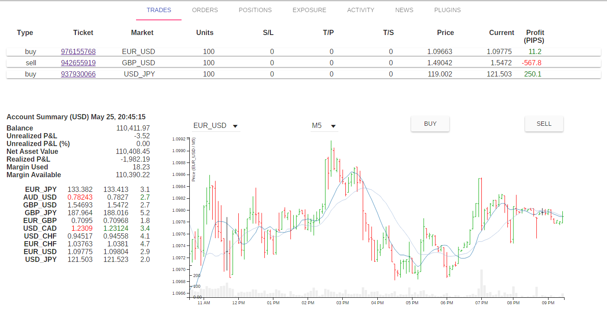

Quest in pursuit of the Golden Fleece in Forex chaos
Argo is an open source trading platform, based on HTML5 technology, connecting directly with OANDA through the powerful API to develop trading strategies.
You may give a try with the following steps (Node.js required):
$ npm install -g argo-trading$ argo-tradingEventually point your web brower to http://localhost:8000.

NOT INVESTMENT ADVICE AND WILL LOSE LOTS OF MONEY SO PROCEED WITH CAUTION.